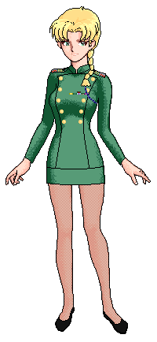

|

6 years past Endor
Emperor Palpatine had been reborn in a clone body and takes Luke Skywalker as apprentice.
The emperor failed to take control over the galaxy again and lost his flagship the Eclipse and the galactic weapon.
1999
Michael was meanwhile commander of the navy had brought several Imperial leaders on his side but negotions got more and more difficult.
The 5th fleet started to get more and more into conflicts with other Imperial fractions, many officers started having problems with Michael's way of command, especially Michael's Imperial command tone which became harder while the fleet was growing, there were also a couple of higher navy officers seeking for more power within the navy.
Michael had brought large fleets together when the fleet started to destableize, and before before they were able to play an Important role in the war between remnants and the alliance.
In a campaign against an opponent Imperial warlord Michael lost the loyality of great parts of the fleets. After long fights Michael and the few standing loyal to him withdrawn to Delasol and fortified there.
It took a while but isolted from the otther Imperial fractions the remainders of the 5th and their allies around Delasol decided to join the Republic.
The 3rd fleet and their allies continued to attack te 5th fleet, but Michael avoided an open battle till the 3rd fleet concentrated on other things.
The 5th fleet started to recove, reduced to one and a half battlegroup and short time lateer Battlegroup Zentar got formed, first under the command of Admiral Martin Gustavsson, later led by Admiral Commskywalker.
When the 5th fleet turned to the Republic, in a short time a new fleet manual needed to be made. The fleet manual that had been created then, was technically the modified Imperial one, and still contained some Imperial remnants, which were replaced later:
End of 1999 Grand Admiral Michael Simon and Grand Admiral Frank Andries started to make some more Lieutenant Brainless Stories, but just 3 issues got created.
End of 1999 the a new fleet manual got created. An early version of the current one. The current fleet manual is still a lightly modified version of this one.
2000
The restructured fleet got soon inflicted in some border skirmishes with battlegroups of Grand Admiral Larsen's armada. In this time the 5th fleet had negotiations with Fleet Admiral Worf. When the Fleet Admiral decided to join the Republic battlegroup Hunter got formed out of parts of Imperial veterans from the 5th and Worf's fleet.
The '1st Outer Rim War' broke between large groups of Republican and Imperial units. The 5th fleet joined the war almost 2 month after it had broken out to reinforce the Republican forces in Cadrel. After the arrival at Cadrel the 5th fleet encountered Grand Admiral Larsen's units again.
In September 2000 Captain Rad Greystone got the Command of the VSD Lost Soul, here is the Ship History he wrote.
The first Run On of the 5th fleet was made during the Outer Rim War about the incidents that happened during the war.
|